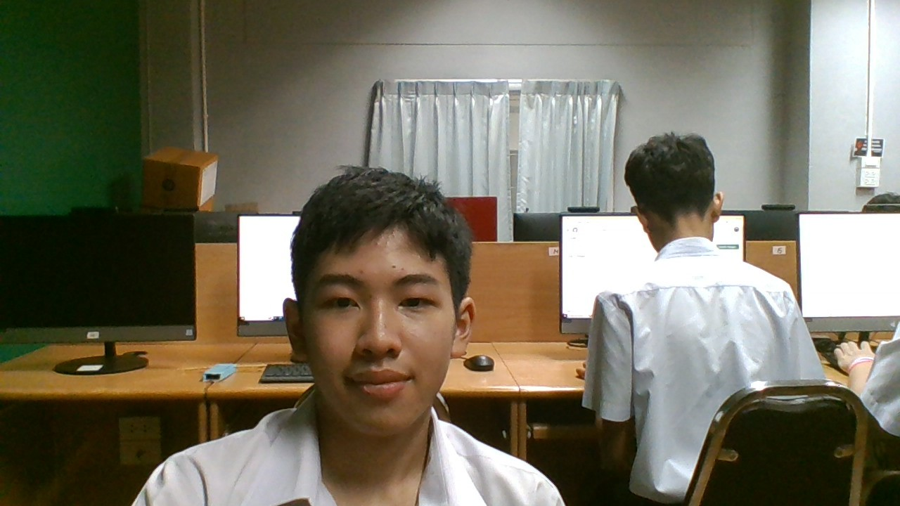
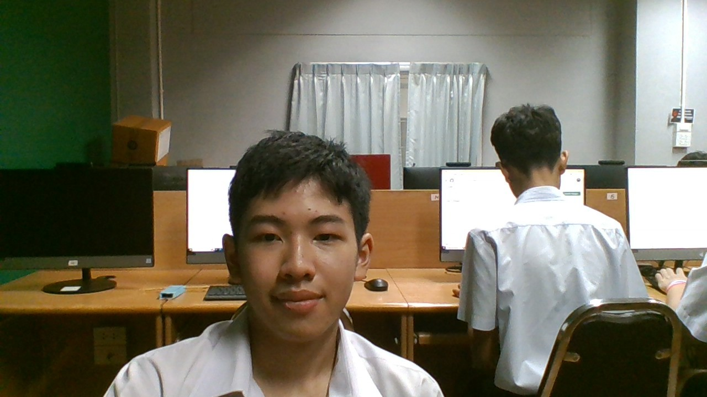

นายสิงหา สุวรรณศรี : ขอบคุณที่สอนวิชาแนะแนว สร้างความบันเทิงในห้องเรียน
เพลงที่มอบให้ครู

นางสาวภาภัสสร พัฒนรักษ์: ขอบคุณที่สอนคณิตศาสตร์ สร้างบรรยากาศที่ดีในห้องเรียน
เพลงที่มอบให้ครู

นาย นายณัฐพงศ์ แตงเพ็ชร์ : ขอบคุณที่สอนวืชาชีววิทยา สอนแบบสนุกสนาน ทำให้รู้จักการหาข้อมูลที่สำคัญ
เพลงที่มอบให้ครู

นาย วีรชัย คำสมหมาย : ขอบคุณที่สอนว่ายน้ำ ทำให้ผมพัฒนาคะแนนเพื่อให้มีเกรด 4 ทั้งห้อง ไม่ว่าจะพัฒนายากขนาดไหนก็ตาม
เพลงที่มอบให้ครู

นาย ณัฐพล รื่นรมย์ : ขอบคุณที่สอนภาษาอังกฤษ แบบเห็นใจเด็ก เน้นความฮาในแต่ละวัน
เพลงที่มอบให้ครู
 

ด.ช. ทยากร จิตต์ชะนะ ม.203 เลขที่ 24